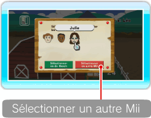

18 |
Détails |
 |
Vous pouvez voir les Pokémon qui sont au Ranch, consulter des informations sur les Mii et regarder le défilé de Pokémon. Par ailleurs, vous pouvez changer les Pokémon sélectionnés pour aller au Ranch en plaçant le curseur sur le bouton des Pokémon au Ranch et en validant avec ● Qu’est-ce qu’un responsable de Pokémon? Il s’agit d’un Mii qui prend soin des Pokémon qu’un Dresseur a amenés au Ranch. Lorsque vous choisissez un responsable, ce dernier et les Pokémon dont il a la charge entretiennent une relation amicale. ● Choisir un autre responsable de Pokémon Sur l’écran détails, pointez le Mii que vous souhaitez sélectionner comme nouveau responsable et appuyez sur Choisir comme responsable un Mii qui est déjà au Ranch Quand l’écran de choix du responsable s’affiche, pointez le Mii qui sera le nouveau responsable et appuyez sur Note: l’icône Choisir comme responsable un Mii qui n’est pas au Ranch
 Pour sélectionner un Mii différent de celui de l’écran du choix de responsable, placez le curseur sur Sélectionner un autre Mii et appuyez sur Note: vous ne pouvez pas choisir Sélectionner un autre Mii si vous avez atteint le nombre maximum de Mii pouvant être au Ranch. Une fois le choix du nouveau responsable terminé, choisissez Valider et ressortir et appuyez sur Note: vous ne pouvez pas changer le responsable pour Eulalie. Si vous souhaitez effacer un Mii Quand vous effacez un Mii sur la chaîne Mii, il disparaît aussi du Ranch; un autre Mii est alors automatiquement désigné comme nouveau responsable. ● Ajouter un Pokémon aux favoris Cette fonction se débloque lorsqu’il y a un certain nombre de Pokémon au Ranch. Une fois que vous ajoutez des Pokémon dans MES FAVORIS, vous pouvez choisir de n’emmener que ces Pokémon au Ranch. Pour ajouter un Pokémon dans MES FAVORIS, pointez ● Défilé Quand vous placez le curseur sur le bouton ORGANISER UN DEFILE sur l’écran détails et que vous appuyez sur |
 . Vous pouvez changer la sélection en TOUS, DRESSEUR ou MES FAVORIS.
. Vous pouvez changer la sélection en TOUS, DRESSEUR ou MES FAVORIS. est placée sous le Mii qui a été désigné responsable du Ranch.
est placée sous le Mii qui a été désigné responsable du Ranch. à côté du nom du Pokémon et appuyez sur
à côté du nom du Pokémon et appuyez sur  |
 |
 |